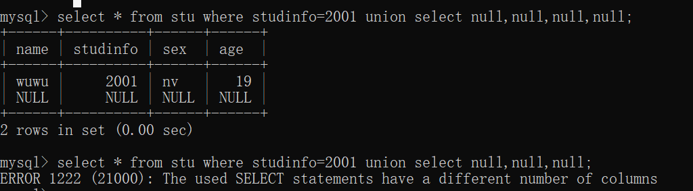
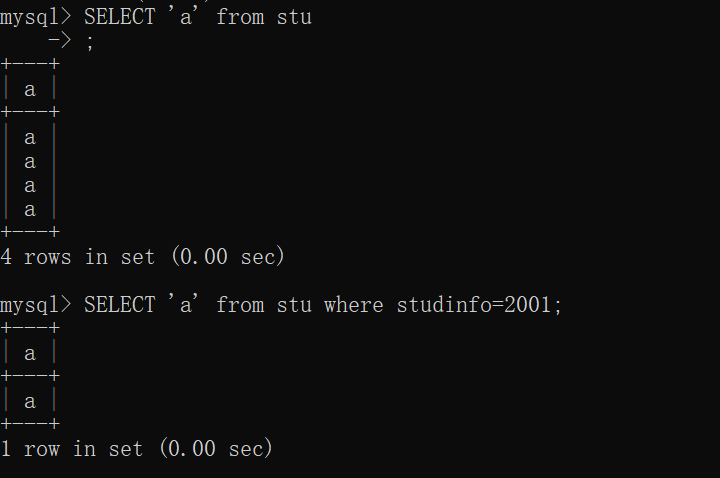

MySQL实操
导读
本来没想实操的，但是由于在学SQL注入的时候遇见了很多问题，不理解那样的SQL语句的执行会产生什么结果。一开始花费了很多时间上网查，查到最后发现还是自己创建一个库写一遍比较方便。
安装MySQL
- 记住软件安装目录和数据保存目录
- 记下账户和密码，都是
root - 记下设置的MySQL名字：
MySQL57 - 配置环境变量
- 原因：本来只有在安装目录下启动MySQL.exe文件才能有效，但是配置了环境变量后，可以直接在cmd中执行
mysql就可运行启动。 - 环境变量也可看做是全局变量
- 原因：本来只有在安装目录下启动MySQL.exe文件才能有效，但是配置了环境变量后，可以直接在cmd中执行
几个重要安装目录
-
DATA目录下
-
存放错误日志文件
-
存放三个目录（系统默认的数据库）
information_schemamysqlperformance_schemasys -
自定义每创建一个数据库，都会在data目录下生成一个文件夹
.FRM后缀，存放表的结构信息.MYD后缀，存放数据信息
-
-
总览的几个目录
-
数据库系统管理软件安装目录
“database manage server”
-
数据库存放目录
“Data目录”
-
数据库链接目录
“connector/J”（java链接mysql需要的安装包）
-
客户端工具目录
“workhench”（mysql客户端管理工具）
-
忘记MySQL登录密码
设置无需密码登录
执行语句，–skip-grant-tables 会让 MySQL 服务器跳过验证步骤，允许所有用户以匿名的方式，无需做密码验证就可以直接登录 MySQL 服务器，并且拥有所有的操作权限。
mysqld --console --skip-grant-tables --shared-memory
接着不关闭当前的cmd，重新打开一个powershell，直接输入命令mysql就可进入到mysql中
坑：Can‘t change dir to报错
根本原因值下面的配置与电脑上的实际配置不一致问题。（或者说缺少data文件问题）
My.ini文件夹中此处配置改为以下，同时为了路径一致我们在那个文件夹下新建了一个data文件
进入MySQL
-
坑：提示系统访问权限不够
未使用管理员权限打开。
开启MySQL和关闭MySQL
net start MySQL57
net stop MySQL57
MySQL57是通过电脑-服务-所查到的本机安装的MySQL的名字
链接MySQL
mysql -hlocalhost -uroot -proot
-h为服务器名，这里指本地服务区
-u为数据库的用户名，默认root
-p为密码
SQL注入在MySQL中的真实查询结果
example
student库里的stu表格

数字/字符型注入的原理
-
OR逻辑加深理解：select * from stu where studinfo=2000 or 1=1; #样例表中没有studinfo=2000这一数据这里，要把
studinfo=2000 or 1=1连一起看，所以查询出来的结果： -
AND逻辑加深理解
UNION语句之确定列数
由于使用union有一个前提条件，即union前后的两个查询语句所返回的列数是一样的。所以我们要事先确定列数。SQL注入中一般常使用以下两类。当然，经过实践，发现也有其他方法。
类1' union select null,null,null--
-
列数匹配和列数不匹配的情况,返回结果是不同的：

-
测试敏感类型
-
结论1：null和‘null’等价，即类型不敏感

-
类1' UNION SELECT 1,2,3,4#
-
类似
1' union select null,null,null--，都是除了查询前面的那个1之外，再返回一个一维数组，填了几列，这个数组就有几个元素。
-
列数匹配和列数不匹配的情况是不同的。

-
测试数据类型是否敏感，结果与null一样，即1与’1‘等价

其他也行
这里指的是，union中，上面的null和1，2，3，4都是为了确定当前所在的数据库有几列。
确定数据表有几列的这些东西可以看做占位符。
当然如果换成其他类型占位也可以。
总结：整型、NULL、浮点型、字符型都可以。
比如：
UNION语句之查找有用数据列
==待解决==
在我看来不管怎么输入都是一样的能够正确返回，但不知道为什么在CTF题目中就可以用这些语句测定字符串类型所在的位置。
在这个例子中第一列和第三列是字符串，但是我这么写并没有报错：
布尔盲注中’a‘等价select ’a‘ from users理解
为什么要用这么长的语句代替简短的
’a‘?因为，注入点中必须输入的是sql语句（只有输入sql语句才能让查询有意义，才能查到我们想知道的结果），而不是单纯的只有
and或者or的布尔判断句。#正确完整： TrackingID' AND (SELECT 'a' FROM users WHERE username='administrator' AND LENGTH(password)>1)='a #如果把等价的长句直接替换成’a‘ #那么这里的length函数就不能用，因为不再sql语句里了，这里的password列名也不能引用了 #归根结底是因为这里AND的逻辑是跟着（where后面）前一个单词和后一个单词连在一起的 TrackingID' AND (’a‘ AND LENGTH(password)>1)='a

报错盲注中SELECT ''的理解
其实跟前面的null和1,2,3,4是一样的，返回的是一个一维数组。

报错盲注中||的理解
||的理解==以下不用看，都是尝试一下的随便写写，||在MySQL中没意义的==
首先明确
||一般只用在Oracle数据库中，表示连接。好像也是构造子查询的作用
随便写的一些在MySQL数据库中的例子：
这样写才可以用的例子：